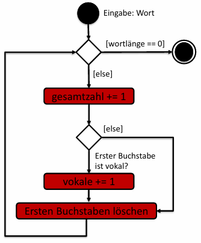
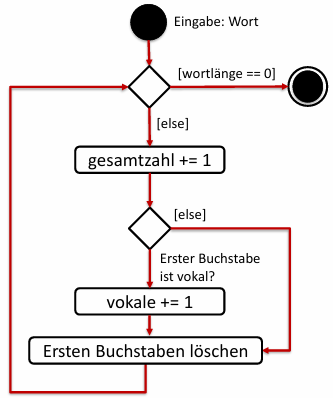
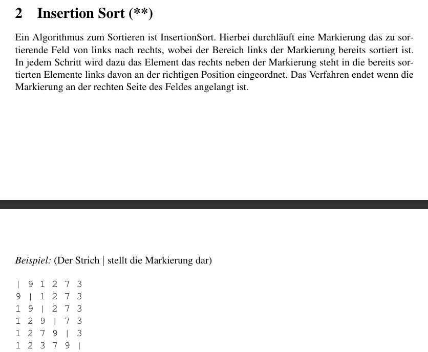

| Schritt (i) | Key (Element rechts) | Liste vor dem Verschieben | Vergleich im sortierten Teil | Aktion / Ergebnis |
|---|---|---|---|---|
| 1 | 1 | [ 9 | 1, 2, 7, 3 ] | 9 > 1 ? Ja. | 9 schiebt nach rechts, 1 wird vorne eingesetzt: [ 1, 9 | 2, 7, 3 ] |
| 2 | 2 | [ 1, 9 | 2, 7, 3 ] | 9 > 2 ? Ja. 1 > 2 ? Nein. |
9 schiebt nach rechts, 2 stoppt hinter der 1: [ 1, 2, 9 | 7, 3 ] |
| 3 | 7 | [ 1, 2, 9 | 7, 3 ] | 9 > 7 ? Ja. 2 > 7 ? Nein. |
9 schiebt nach rechts, 7 stoppt hinter der 2: [ 1, 2, 7, 9 | 3 ] |
import sys $\leftarrow$ immer !!!<var> = sys.[i]
import sys
if len(sys.argv) < 3: #guckt, ob ich mind. 3 Elemente habe (Dateiname, liter, distanz)
print('Bitte geben Sie Liter und die Distanz an!.')
sys.exit() #beendet d. Programm sofort
liter = float(sys.argv[1])
distanz = float(sys.argv[2])
verbrauch = (liter *100)/distanz
print(round(verbrauch,2))
# Terminal
python3 verbracuh.py 45.5 600
# Output
7.58
Call by Value (Werte-Kopie):
int, float, str, bool
Call by Reference (Adress-Verweis):
list, dict, set
Man kann ein Text nicht ändern !!!
text = "Was machen Sachen"
text[2] = i
#Augabe: Error
<liste>.clear():
<list>.count(<elem>):
<list1>.extend(<liste2>):
<list>.index(<elem>, start, end):
<list>.insert(<elem>):
<list>.reverse():
<list>[::-1] = Kopie<list>.sort():
.pop(<index>):
.remove():
.remove(<elem>) entspricht, wird entf..copy():
liste_a = [10, 20, 30]
liste_b = liste_a
liste_b[0] = 2
#Ausgabe:
Originale Listen:
---------------------------------
Lista A: [10, 20, 30]
Liste B: [10, 20, 30]
V1 Listen:
---------------------------------
Liste_a: [2, 20, 30]
Liste_b: [2, 20, 30]
ID von A: 1834691293696
ID von B: 1834691293696
True
liste_a = [10, 20, 30]
liste_b = liste_a.copy()
liste_b[0] = 2
Originale Listen:
Lista A: [10, 20, 30]
Liste B: [10, 20, 30]
V1 Listen:
Liste_a: [10, 20, 30]
Liste_b: [2, 20, 30]
ID von A: 2152350446080
ID von B: 2152352749696
False
import copy
liste_a = [10, 20, 30]
liste_b = copy.deepcopy(liste_a)
liste_b[0] = 2
#Ausgabe:
Originale Listen:
Lista A: [[1], [3, 8, 8], [9, 6], 7]
Liste B: [[1], [3, 8, 8], [9, 6], 7]
V1 Listen:
ID "OG-Conteiner": 1667841546688
ID "Copy-Conteiner": 1667839716544
False
.append():
haupt_liste = [1, 2]
zusatz = [3, 4]
# Szenario A: append (Das Objekt als Ganzes)
liste_a = [1, 2]
liste_a.append(zusatz)
print(liste_a)
# Ergebnis: [1, 2, [3, 4]] <-- Liste in der Liste
# Szenario B: += (Nur der Inhalt)
liste_b = [1, 2]
liste_b += zusatz
print(liste_b)
# Ergebnis: [1, 2, 3, 4] <-- Alles auf einer Ebene
[0, 2, 2]
[5, 3, 5]
[15, 15, 3]
---------------------------------------------------------------
[0, 2, 2] 4
[5, 3, 5] 13
[15, 15, 3] 33
#etw. größere Liste
[5, 0, 5, 13, 5, 11, 9, 8, 20, 7]
[6, 8, 5, 1, 8, 13, 8, 15, 1, 20]
[13, 18, 18, 15, 16, 17, 15, 8, 16, 6]
[18, 5, 5, 10, 20, 2, 16, 6, 18, 9]
[3, 13, 9, 3, 5, 3, 13, 7, 16, 8]
[20, 12, 4, 19, 16, 2, 16, 0, 16, 10]
[19, 4, 6, 19, 17, 20, 11, 10, 2, 8]
[6, 12, 5, 0, 4, 9, 14, 2, 15, 9]
[11, 2, 10, 13, 15, 11, 8, 14, 16, 4]
[1, 1, 19, 1, 19, 10, 2, 7, 14, 4]
---------------------------------------------------------------
[1, 1, 19, 1, 19, 10, 2, 7, 14, 4] 78
[3, 13, 9, 3, 5, 3, 13, 7, 16, 8] 80
[5, 0, 5, 13, 5, 11, 9, 8, 20, 7] 83
[6, 8, 5, 1, 8, 13, 8, 15, 1, 20] 85
[6, 12, 5, 0, 4, 9, 14, 2, 15, 9] 76
[11, 2, 10, 13, 15, 11, 8, 14, 16, 4] 104
[13, 18, 18, 15, 16, 17, 15, 8, 16, 6] 142
[18, 5, 5, 10, 20, 2, 16, 6, 18, 9] 109
[19, 4, 6, 19, 17, 20, 11, 10, 2, 8] 116
[20, 12, 4, 19, 16, 2, 16, 0, 16, 10] 115
[4, 6, 18, 11]
[19, 15, 9, 16]
[3, 1, 12, 8]
[19, 3, 15, 10]
---------------------------------------------------------------
[3, 1, 12, 8] 12
[4, 6, 18, 11] 18
[19, 3, 15, 10] 19
[19, 15, 9, 16] 19
#Etwas größere Liste
[9, 14, 12, 4, 20, 5, 13]
[20, 0, 7, 6, 11, 20, 4]
[5, 8, 20, 12, 11, 18, 8]
[10, 5, 3, 10, 12, 8, 7]
[12, 17, 4, 4, 14, 2, 10]
[14, 17, 18, 2, 10, 17, 7]
[13, 13, 6, 15, 16, 8, 3]
---------------------------------------------------------------
[5, 8, 20, 12, 11, 18, 8] 20
[9, 14, 12, 4, 20, 5, 13] 20
[10, 5, 3, 10, 12, 8, 7] 12
[12, 17, 4, 4, 14, 2, 10] 17
[13, 13, 6, 15, 16, 8, 3] 16
[14, 17, 18, 2, 10, 17, 7] 18
[20, 0, 7, 6, 11, 20, 4] 20
[11, 7, 9, 8]
[16, 2, 8, 16]
[4, 5, 12, 20]
[10, 17, 2, 12]
---------------------------------------------------------------
[4, 5, 12, 20] 4
[10, 17, 2, 12] 10
[11, 7, 9, 8] 11
[16, 2, 8, 16] 16
#größere Liste
[16, 0, 19, 7, 3, 18, 2]
[8, 15, 9, 1, 0, 4, 7]
[3, 14, 10, 19, 20, 20, 5]
[11, 1, 17, 11, 1, 7, 8]
[2, 17, 12, 17, 12, 20, 3]
[2, 16, 16, 18, 7, 4, 0]
[14, 12, 1, 6, 13, 8, 20]
---------------------------------------------------------------
[2, 16, 16, 18, 7, 4, 0] 2
[2, 17, 12, 17, 12, 20, 3] 2
[3, 14, 10, 19, 20, 20, 5] 3
[8, 15, 9, 1, 0, 4, 7] 8
[11, 1, 17, 11, 1, 7, 8] 11
[14, 12, 1, 6, 13, 8, 20] 14
[16, 0, 19, 7, 3, 18, 2] 16
sorted_indices = sorted(häufigkeiten.keys())my_dict = {'a': 2, 'c': 1, 'b': 4, 'd': 3}
sortierte_liste_tupel = sorted(my_dict.keys()) # Ausgabe: {'a': 1, 'b': 2, 'c': 3, 'd': 4}
dic.upadte()dic = {}
n = 7
k = 3
dic.update({(n,k) : 45})
print(dic)
Man muss es sich so vorstellen, dass .readlines() unsere Augen sind & wir jede Zeile lesen ! Das heißt, wenn ich etw. hinzufüge, dass ich dann mit den Augen unter d. letzen Zeile bin. Wenn jmd. jzt. fragen würde, was da steht, dann würde ich "nichts" sagen, weil da nichts geschrieben steht. Damit ich lesen kann, muss ich wieder mit den Augen zur ersten Zeile, welches hier mit .seek({index}) geschieht. ES IST GANZ WICHTIG ZU WISSEN, DASS .split(), .strip(), usw. EINEN STRING ZURÜCK GEBEN !!!
Also wenn ich in der Klausur eine Aufgabe bekommen sollte, welches mit einer Datei ist, dann muss ich als ersten gucken, ob ich den gesamten Inhalt als Ganzes brauche, oder ob ich es auch zeilenweise angucken kann.
Wenn ich eine „Textanalyse“ machen muss, also den gesamten Text vor mir gedruckt haben möchte, damit ich da zum Bsp Wörter oder Buchstaben „korrigieren“ möchte, dann benutze ich readlines(). Im Computer ist d. gedruckte Blatt dann eine Liste mit den einzelnen Elementen als String mit \n & \t.
Wenn ich aber zeilenweise abschreiben möchte, v. einem Buch in meinen Heft, dann muss ich .readline() verwenden. Wichtig hierbei ist, dass mein Auge immer einen Zeile weiter geht ! + ich muss dem Computer sagen, dass es etwas n Mal machen soll, weil er dann etwas z.B. nur 1 mal macht
r = read
w = write
a = append
Wie kombinieren?
'r+''w+''a+'with open("Probe.txt", 'r') as data:
print(data)
var = close() am Endewith open("Probe.txt", 'r') as data:
f_inhalt = data.readlines()
print(f_inhalt)
# Ausgabe
['1) Papa \n', '2) Mama \n', '3) Efe \n', '4) Sude \n', '5) Simge \n', '6) Pepee \n', '7) Mayla ']
.readline() ist so, als ob wir ein Buch haben und ein Heft. Unser Auge guckt im Buch n. d. ersten Zeile und wir schreiben d.as in unser Heft ab. Autom., wenn wir ins Buch gucken, beginnen wir mit d. 2. Zeile & d. schreiben wir ebenso in ins Heft. usw. Da wir dem Computer alles definieren müssen, müssen wir sagen wie viele solcher Prozesse wir durchmachen möchten, welches hier = 66 mal ist. D.h., dass wir 66 $\times$ d. Buch lesen & abschreiben
Übungsblatt 6, Nr.4
hierbei wird nur eine Zeile gelesen
with open("Probe.txt", 'r') as data:
f_inhalt = data.readline()
print(f_inhalt)
# Augabe
1) Papa
print(f_inhalt, end=' ') mache, dann wird es ohne den Absatz ausgegeben# Augabe
1) Papa
with open("Probe.txt", 'r') as data:
for line in data:
print(line, end='')
#Ausgabe
1) Papa
2) Mama
3) Efe
4) Sude
5) Simge
6) Pepee
with open("Probe.txt", 'a+') as data:
mayla = '\n7) Mayla'
# 1. Schreiben/Anhängen
data.write(mayla)
# 2. Zeiger zurücksetzen auf den Anfang (Index 0)
data.seek(0)
# 3. Lesen der gesamten Datei ab Index 0
inhalt = data.read()
# 4. Ausgabe des gelesenen Inhalts
print(inhalt)
# Veränderte Textdatei:
1) Papa
2) Mama
3) Efe
4) Sude
5) Simge
6) Pepee
7) Mayla
with open("Probe.txt", 'a+') as data:
#String schrieben
mayla = str(input(f"Was soll hinzugefügt werden: "))
#String zur Datei hinzufügen
data.write('\n' + mayla)
#Position in der Datei wieder auf die erste zeile setzen
data.seek(0)
lines = data.readlines()
for line in lines:
print(line, end="")
# Augabe
1) Papa
2) Mama
3) Efe
4) Sude
5) Simge
6) Pepee
7) Mayla
w+with open("Probe.txt", 'w+') as data:
#String schrieben
mayla = str(input(f"Was soll hinzugefügt werden: "))
#String zur Datei hinzufügen
data.write(mayla)
#Position in der Datei wieder auf die erste zeile setzen
data.seek(0)
lines = data.readlines()
for line in lines:
print(line, end="")
# Ausgabe
Hallo was geht ?
# man sieht alos, dass d. gesamte Inhalt gelöscht wurde
with open("Probe.txt", 'a+') as data:
data.seek(0)
lines = data.readlines()
for line in lines:
if line.strip() == '':
continue
print(line, end="")
# Text davor
1) Papa
2) Mama
3) Efe
4) Sude
5) Simge
6) Pepee
7) Mayla
# Text danach:
1) Papa
2) Mama
3) Efe
4) Sude
5) Simge
6) Pepee
7) Mayla
Wie kann ich denn machen, dass ich jede dritte Zeile oder 4. Zeile lesen möchte ?:
%pfad = 'My fam.txt'
with open(pfad,'w'):
pass
def begruessung(name="Mensch"):
print("Hallo " + name)
begruessung()
begruessung("Lisa")
#output
"Hallo Mensch"
"Hallo Lisa"
def letterCount(text, zeichen=string.ascii_letters):
count_collection = []
for letter in zeichen:
count = text.count(letter)
count_collection.append(count)
return count_collection
text = str(input('String: ')) #"Was machen Sachen ?"
zeichen = str(input('Zeichen: ')) #'ach'
print(letterCount(text, zeichen))
#Output
[3, 2, 2]
So kann mich sich die Rekursion auch vorstellen.
Bsp.: Fibonacci-Zahlen
Wenn du wissen willst, was der Wert von $F(5)$ ist, gehst du zu Person 5. Da diese d. Antwort $\lnot$ auswendig weiß, ruft sie sofort bei ihren Kollegen in Büro 4 und Büro 3 an und bittet sie um Hilfe. D. Problem bei d. normalen Rekursion ist, dass diese Kollegen wiederum ihre Nachbarn anrufen müssen, was zu unzähligen Telefonaten führt, bei denen dieselben Fragen immer & immer wieder gestellt werden.
Hier kommt unsere Schachtel 📦 ins Spiel, d. im Flur $\forall$ erreichbar steht: das Memo-Dictionary. Bevor eine Person zum Hörer greift, schaut sie erst in diese Schachtel. Liegt dort schon ein Zettel mit dem Ergebnis f. ihr Büro, nimmt sie den Wert einfach heraus & gibt ihn sofort an den Fragesteller weiter. Ist d. Schachtel leer, müssen die Kollegen angerufen werden. Die Einzigen, d. niemals telefonieren müssen, sind d. Personen in Büro 0 und Büro 1. Sie kennen ihre Werte (0 und 1) sofort, legen sie als Erste in d. Schachtel und starten damit d. Kettenreaktion. Sobald eine Person d. Antw. ihrer beiden Kollegen erhalten hat, addiert sie diese, schreibt das neue Ergebnis auf einen Zettel für die Schachtel und liefert die Antwort ab. So wird jede Zahl im Gebäude nur ein einziges Mal wirklich berechnet. ✨
def querSumme(n:str, result:int)->int:
if len(n) == 0:
return result
else:
b = int(n[0])
result += b
return querSumme(n[1:],result)
n = str(input("n: "))
n_lst = []
for i in n:
n_lst.append(i)
result = 0
print(querSumme(n_lst,result))
oder
def quersumme(n: int) -> int:
if n < 10:
return n
return (n % 10) + quersumme(n // 10)
Präsenzblatt
Also $len(Höhe_{absolut})$ & je n. dem wo wir uns in dem absoluten intervall befinden, wird d. Breite demetsprechend berechnet.
$H_{absolut} \in [1,4]$
Also, wir haben jzt. d. Basis $B$, aber weil wir aber d. Hälfte d. Basis benötigen = $\frac{B}{2}$
d. absolute Höhe $H_{abs}$ & autom. auch $H_{rel}$
Die $Gesamthöhe \in [2.5, 5.5]$ & $H_{relativ}$ bewegt sich im Bereich $5.5 - 2.5 = 3 \implies H_{relativ} \in [0,3]$
Rampe $B = 2$ & $H_{abs} = 1 \to$ Verhätnis zwischen Höhe zur Länge $= \frac{Höhe}{Länge}$
$100$ Menschen ingesamt
$34$ = krank
$34/100 = 0.34 = 34\ %$
Das Verhältnis zw. den Menschen & den Kranken beträgt $34\ %$

def vokal_counter(wort:str)-> tuple:
gesamtzahl = 0
vokale = 0
while len(wort) > 0:
gesamtzahl += 1
if wort[0] in "aeiou":
vokale += 1
wort = wort[1:]
return gesamtzahl, vokale
wort = str(input("Wort: ")).lower().replace(" ","")
print(wort)
print(vokal_counter(wort))

def c1_test()->bool:
return vokal_counter('ab') == (2,1)

def insertion_sort(lst: list[int])-> list[int]:
if len(lst) <= 1:
return lst
else:
for i in range(1,len(lst)):
j = i-1
key = lst[i]
while j >= 0 and lst[j] > key:
lst[j+1] = lst[j]
j -=1
lst[j+1] = key
return lst
lst = [8, 4, 3, 9, 7, 1, 4, 2, 4, 7]
print(lst)
print(insertion_sort(lst))
|#Probe.txt
1) Papa
2) Mama
3) Efe
4) Sude
5) Simge
6) Pepee
7) Mayla
#Probe.txt
1) Papa
2) Mama
3) Efe
4) Sude
5) Simge
6) Pepee